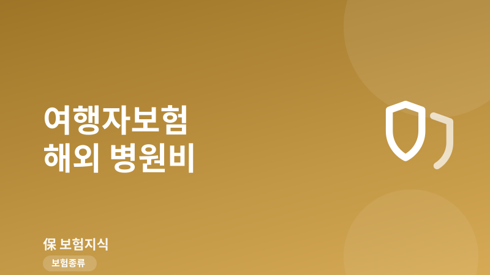
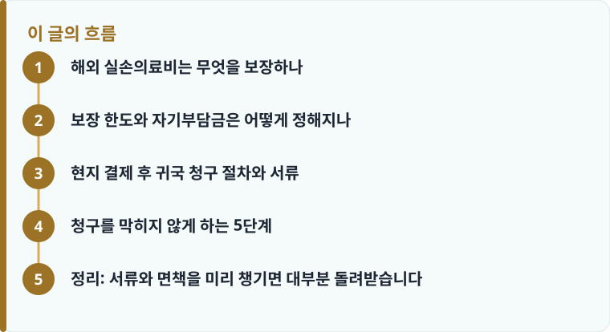

해외여행 실손의료비는 현지에서 낸 치료비를 정해진 한도(흔히 1,000만~5,000만 원) 안에서 실비로 돌려주는 담보이며, 대개 현지 결제 후 귀국해 청구하는 방식입니다.
영문 진단서와 영수증, 진료 내역서를 현지에서 미리 받아 두어야 청구가 막히지 않습니다.
기존 질환, 치과, 임신·출산, 단순 검진은 면책인 경우가 많아 약관의 보상하지 않는 손해를 먼저 봐야 합니다.
해외 실손의료비는 무엇을 보장하나
여행자보험의 여러 담보 중 실제로 가장 자주 쓰이는 것이 ‘해외여행 실손의료비’입니다. 여행 기간에 여행지에서 갑자기 병이 나거나 다쳐 현지 병원에서 치료받은 비용을, 정해진 한도 안에서 실제 지출한 만큼 돌려주는 담보입니다. 감기·장염 같은 질병 치료비, 넘어져 생긴 골절, 물놀이 사고 등 대부분의 급성 상해와 질병 치료가 여기에 포함됩니다. 여행자보험 전반의 구성이 궁금하다면 여행자보험 기본 구조부터 확인하면 이해가 빠릅니다.
중요한 점은 이 담보가 ‘여행 중 발생한’ 치료만 보장한다는 것입니다. 출국 전부터 앓고 있던 병이 여행지에서 악화된 경우나, 계획적으로 해외에서 치료를 받으러 간 경우는 원칙적으로 대상이 아닙니다. 또한 국내로 돌아와 이어서 받은 치료는 담보 종류에 따라 ‘국내의료비’로 따로 처리되거나 보장 기간이 제한될 수 있어, 귀국 후 치료가 길어질 것 같으면 약관의 보장 기간을 미리 확인해야 합니다.
보장 기간 자체도 여행 일정과 정확히 맞물려야 합니다. 여행자보험은 보통 출국일부터 귀국일까지의 여행 기간에만 효력이 있으므로, 일정이 하루라도 늘어나면 그 사이 발생한 치료는 보장받지 못할 수 있습니다. 특히 배낭여행이나 장기 체류처럼 귀국 날짜가 유동적인 경우에는 넉넉하게 기간을 잡거나 연장 가능 여부를 미리 확인하는 편이 안전합니다. 또한 스쿠버다이빙, 스키, 오토바이 운전처럼 사고 위험이 높은 활동은 별도 특약이 없으면 상해가 나도 면책될 수 있으니, 예정된 액티비티가 담보에 포함되는지도 함께 살펴야 합니다.
보장 한도와 자기부담금은 어떻게 정해지나
해외 실손의료비 한도는 상품과 가입 설계에 따라 다르지만, 여행자보험에서는 흔히 1,000만 원, 3,000만 원, 5,000만 원 단위로 설정합니다. 짧은 여행이라도 해외 응급실이나 입원비는 국내보다 훨씬 비싸, 미국 같은 지역에서는 하루 입원에 수백만 원이 나오기도 합니다. 그래서 목적지의 의료비 수준을 고려해 한도를 정하는 것이 현실적입니다.
국내 실손보험과 마찬가지로 자기부담금이 있을 수 있습니다. 상품에 따라 치료비의 일부(예: 급여·비급여 구분 없이 일정 비율 또는 소액 정액)를 본인이 부담하고 나머지를 보험금으로 받는 구조가 많습니다. 자기부담 방식과 실손 청구의 기본 원리가 헷갈린다면 실손보험 청구 방법을 함께 읽으면 해외 청구에도 그대로 응용할 수 있습니다. 한 가지 더, 이미 국내 실손보험이 있어도 해외에서 낸 의료비는 국내 실손이 보장하지 않는 경우가 대부분이므로, 여행 기간용 해외 실손 담보는 별도로 필요합니다.
반대로 해외에서 시작된 치료를 귀국 후 국내 병원에서 이어 받는 경우에는 국내 실손보험이 도움이 될 수 있습니다. 예를 들어 여행 중 발목이 부러져 현지에서 응급처치만 받고 귀국해 국내에서 수술과 재활을 받았다면, 현지 비용은 여행자보험의 해외 실손으로, 귀국 후 국내 치료비는 본인의 국내 실손보험으로 나누어 청구하는 식입니다. 두 보험의 보장 구간이 겹치지 않도록 어디까지가 해외 치료이고 어디부터가 국내 치료인지 진료 기록으로 구분해 두면 청구가 훨씬 매끄럽습니다.

현지 결제 후 귀국 청구 절차와 서류
해외 치료비는 보통 현지에서 먼저 본인 카드로 결제한 뒤, 귀국 후 서류를 갖춰 보험사에 청구하는 방식으로 진행됩니다. 이때 가장 자주 문제가 되는 것이 서류입니다. 청구의 핵심 서류는 크게 세 가지로, 무슨 병·상해로 치료했는지 적힌 영문 진단서(또는 소견서), 실제 결제 금액이 찍힌 영수증, 그리고 어떤 진료·검사·처방을 받았는지 나온 진료 내역서(itemized bill)입니다. 이 서류들은 귀국하면 다시 받기가 매우 어렵기 때문에, 병원을 나오기 전에 반드시 챙겨야 합니다.
보험금 청구 단계에서 필요한 서류의 큰 틀은 국내 청구와 비슷하므로 보험금 청구 필요서류를 먼저 보면 무엇을 준비할지 감이 잡힙니다. 다만 해외 서류는 언어와 통화가 달라 몇 가지가 더 붙습니다. 진단서·영수증이 현지어로만 되어 있으면 번역본이나 영문본을 요구할 수 있고, 결제 통화가 외화이므로 보험사는 보통 진료일 또는 결제일 기준 환율로 원화 환산해 지급합니다. 카드 명세서나 환전 영수증을 함께 보관하면 금액 확인이 수월합니다. ‘진단서’, ‘면책’ 같은 용어가 낯설다면 보험 용어사전에서 뜻을 확인해 두면 서류를 읽을 때 도움이 됩니다.
작성·검수 기준
이 글은 특정 여행자보험 상품을 권유하기 위한 것이 아니라, 해외에서 치료를 받았을 때 보상 범위를 가늠하고 청구를 준비하는 데 필요한 일반적인 기준을 설명하기 위해 작성했습니다. 보장 한도, 자기부담금, 면책 항목, 필요 서류는 가입 시점의 약관과 개별 상품에 따라 달라질 수 있습니다.
정확한 보장 여부는 본인 증권의 약관과 상품설명서, 그리고 실손보험 청구 방법을 함께 확인하는 것이 가장 정확합니다.
청구를 막히지 않게 하는 5단계
해외 의료비 청구가 거절되거나 지연되는 사례는 대부분 서류 부족과 면책 항목 때문입니다. 아래 순서대로 준비하면 대부분의 청구는 무리 없이 진행됩니다. 특히 기존에 앓던 병, 치과 치료, 임신·출산 관련 진료, 건강검진 목적의 진료는 면책으로 빠지는 경우가 많으니 치료 전에 담보 대상인지 확인하는 것이 좋습니다.
- 병원을 나오기 전 영문 진단서·영수증·진료 내역서를 원본으로 받습니다.
- 카드 결제 명세서와 환전 영수증을 보관해 결제 통화·금액을 증빙합니다.
- 치료가 기존 질환·치과·임신·검진 등 면책 항목에 해당하는지 약관에서 확인합니다.
- 귀국 후 보험사 앱이나 서면으로 청구서를 작성하고 서류를 제출합니다.
- 외화 금액은 환율 환산 기준을 확인하고, 부족 서류 요청에 대비해 사본을 남겨 둡니다.
정리: 서류와 면책을 미리 챙기면 대부분 돌려받습니다
해외에서 낸 병원비는 여행자보험의 해외 실손의료비 담보로 한도 안에서 대부분 돌려받을 수 있지만, 실제 지급 여부를 가르는 것은 ‘현지에서 챙긴 서류’와 ‘면책 항목 확인’입니다. 영문 진단서와 영수증, 진료 내역서를 병원에서 미리 받고, 기존 질환·치과·임신 같은 면책을 출발 전에 알아 두면 귀국 후 청구에서 당황할 일이 크게 줄어듭니다.
다른 보험 정보 글이 궁금하다면 보험지식 블로그에서 이어 읽어 보세요. 가입 전에는 반드시 약관과 상품설명서를 확인하는 것이 가장 안전한 방법입니다.